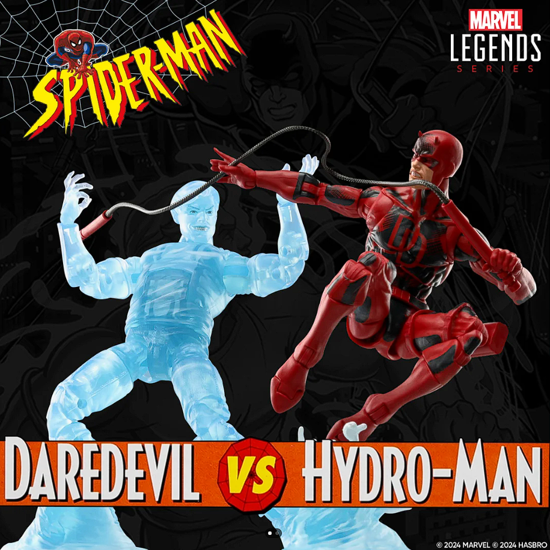
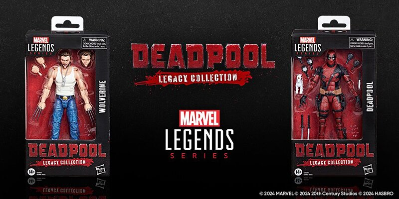

New Spiderman Retro Series 2Pack

Hasbro’s Marvel Legends series is introducing a new two-pack featuring Daredevil and Hydro-Man, delighting fans and collectors. The Daredevil figure showcases his classic red suit with meticulous detail and multiple articulation points for dynamic poses. Accessories include interchangeable hands and his iconic billy clubs, capturing his acrobatic and vigilant persona.
The Hydro-Man figure is equally impressive, highlighting his water-manipulating abilities with translucent water effect parts and numerous articulation points. Accessories such as interchangeable hands that resemble water blasts allow for versatile display options.
This two-pack exemplifies Hasbro’s dedication to quality and authenticity, making it a prized addition for Marvel Legends enthusiasts. Celebrating the rich narratives and dynamic abilities of Daredevil and Hydro-Man, these figures offer fans a tangible connection to the Marvel universe, making them essential for any collection.
New Spiderman Retro Series 2Pack

Hasbro’s new Marvel Legends Deadpool and Wolverine Legacy figures are standout additions to the beloved series. The Deadpool figure showcases exceptional detail, capturing his iconic red and black suit with multiple articulation points for dynamic posing. Accessories include interchangeable hands, katanas, and his signature chimichanga, reflecting Deadpool’s humor and combat prowess.
The Wolverine Legacy figure honors Logan’s storied past with a classic yellow and blue costume, detailed to emphasize his rugged appearance. It features similar articulation for versatile poses, alongside accessories like alternate hands with retractable claws and a samurai sword, highlighting Wolverine’s ferocity and skill.
Both figures exemplify Hasbro’s dedication to quality and authenticity, making them essential for Marvel Legends collectors.Preordering is easy: visit Hasbro Wolverine
For Deadpool Visit
Celebrating the rich history and enduring popularity of these characters, these Legacy figures offer fans a tangible connection to their favorite Marvel heroes.